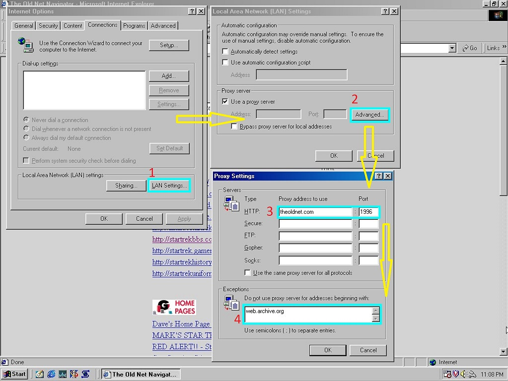

Привет это туториал как вернутся в интренет 2000 для настольгии. Туториал будет взят с сайта theoldnet.org
Чтобы осуществить это вам будет нужно настроить прокси сервер на фото будет пример в браузере "Internet Explorer" итак приступаем
Открываем настройки Internet Explorer и переходим в вклкадку прокси
Выбираем в "Connections" Lan Settings
Потом выбираем "Advenced" и открывается настройки прокси
В HTTP водим theoldnet.com а в порт водим желаемый год на пример 1996
И в Exception водим web.archive.org
Воуля! И теперь ваш браузер как будто в конце 90х
!Внимание! Фото примеров и инстуркция взята в сайта theoldnet.org инстуркция была переведена и упращена автор этого сайта никак не относится к theoldnet.org!

© 2025 AdvaScriptCC®, all right recived